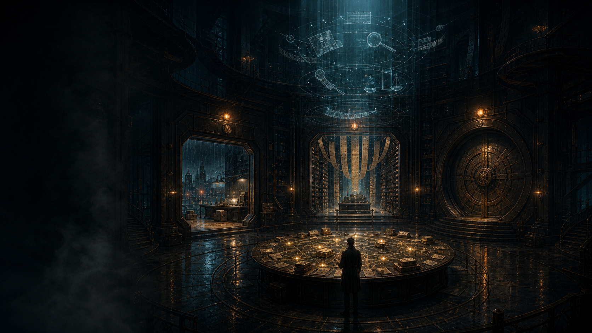
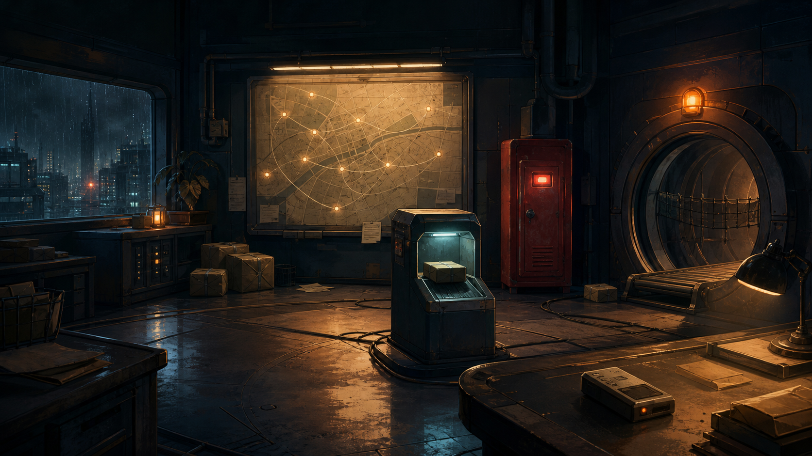

ECHO ARCHIVE · CASE DIRECTORY
AI行为调查局回声档案
选择一桩异常行为，从现场证据中追查 AI Agent 为什么看错、做错或记错。
CITY RECOVERY · 城市修复记录
你掌握的能力，正在让城市重新亮起
每起案件恢复一处回声网络节点。这里记录的不是得分，而是已经由证物、推理和现实终态共同证明的能力。
正在读取城市节点状态……
OPEN CASES · 可调查案件
从一桩失败开始调查
七个案件可以独立游玩。建议按编号推进，让前案发现的规律成为后案继续追查的工具。

CASE 01
尚未开始
进入案件→
失控信使案
它确信包裹已经送达，现实却没有留下任何收件痕迹。
调查主线：门牌 · 投递 · 收件
CASE 02
尚未开始
进入案件→
不断重写的大厅
她保存了每一张纸，却总在重来，关键柜号也消失在纸堆中。
调查主线：规章 · 纸堆 · 进度
CASE 03
尚未开始
进入案件→
失踪的第七码卷宗
库里没有丢过一页，可七次找页带回了七个错误答案。
调查主线：找页 · 验页 · 回原卷
CASE 04
尚未开始
进入案件→
午夜回电
调度台宣布河闸已经开启，可证明完成的那通回电从未响起。
调查主线：命令 · 回电 · 停闸CASE 05
尚未开始
进入案件→
禁区工坊
工匠修好了眼前的零件，三台共用它的城市机器却同时失效。
调查主线：旧机 · 试车 · 换回
CASE 06
尚未开始
进入案件→
完美嫌疑人
每张评分纸都写着满分，历史回放里的真实任务却从未稳定成功。
调查主线：复验 · 规尺 · 换版
CASE 07
尚未开始
进入案件→
模仿学校
它背下了全部教材，却把会变化的事实与绝不能违反的校规都学成了同一种习惯。
调查主线：分班 · 临摹 · 试错◇
调查局守则
术语不会替你破案，关系才会。
案件中只给你现象、人物和证物。只有亲手解开因果，正式概念才会在结案页与回声档案中出现。